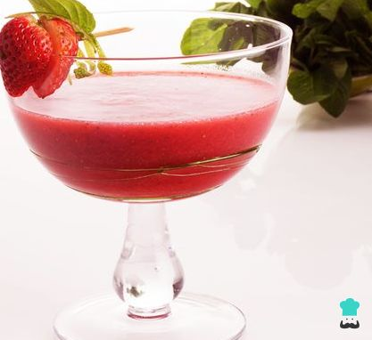
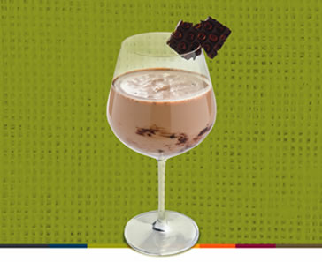
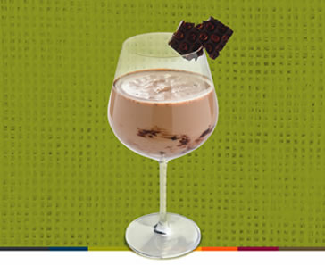

Cinco recetas de cócteles especiales para el frío de las noches de playa - Maridaje | Maridaje
2021.06.26 11:10
Noticias Economía Deportes Espectáculos Tendencias Autos Servicios Fotos Emol TV 360 Menú Inicio El maridaje de la semana Tips Secretos del buen beber Al Plato Para Cocinar Tecnología Recomendamos Para Probar Consejos Qué quieres comer Lo nuevo Para probar siempre Cosas ricas Qué quieres beber Vinos Cervezas Licores Aguas & Jugos Café & Té Aceites Noticias Lanzamientos Inicio Noticias Tips Secretos del buen beber Cinco recetas de cócteles especiales para el frío de las noches de playa
Cinco recetas de cócteles especiales para el frío de las noches de playa
01 de Febrero de 2019Dicen que el frío es elegante. Pero más si se pasa con un cóctel, ojalá con whisky. Y no, no estamos perdidos de época sino que estamos pensando en quienes van a la playa y mueren de frío en las noches junto al mar.
Por eso, desde Johnnie Walker nos mandaron cinco recetas para disfrutar en estos días.
Pon atención.
Hot Toddy
Ingredientes
2 onzas de Johnnie Walker Black Label 1 cucharada de bar colmada de Miel 3 clavos de olor 1/2 oz. Goma 1/2 oz. Jugo de limón Rodaja de limón con los 3 clavos insertos y una rama de canela Preparación
Precalentar la taza, añadir la miel junto con el resto de ingredientes, a excepción del agua. Revolver hasta que la miel se haya disuelto. Rellenar con Agua hirviendo y decorar con la rodaja de limón.
Walker Alexander
Ingredientes
1 oz Johnnie Walker Wine Cask 1 oz Licor de Cacao 1 oz Crema de Leche Nuez moscada en polvo Preparación
Batir todos los ingredientes en una coctelera con mucho hielo y colar sobre una copa de Martini. Decorar con nuez moscada recién rallada sobre el cóctel.
Café Escocés
Ingredientes
1.25 oz Johnnie Walker Black Label 1/2 oz Jarabe de goma 5 oz café americano Rellenar con crema a medio punto o chantilly Granos de café para decorar Preparación
Precalentar la taza con agua caliente, descartar el agua y agregar el resto de los ingredientes y luego revolver para unificar. Colocar la crema sobre el cóctel y decorar con 3 granos de café.
Rob Roy
Ingredientes
2,5 oz. J. Walker Gold Label Reserve 1 oz. Vermouth rosso 2 dash Amargo de Angostura Cereza Marrasquino para decorar Preparación
Refrescar todos los ingredientes en un vaso mezclador con hielo y colar sobre una copa de Martini con una cereza marrasquino de decoración dentro de la copa.
Hotel Internacional
Ingredientes
1,75 oz. Johnnie Walker Gold 0,5 oz. licor de damasco 0,75 oz jugo de piña 0,75 oz jugo de limón sutil 0,25 oz goma 2 dashes amargo de ciruelas Rodaja de limón para decorarPreparación
Poner todos los ingredientes en una coctelera con mucho hielo. Doble colar sobre una copa de Martini previamente enfriada. Decorar con una rodaja de limón sutil deshidratada sobre el cóctel.
No hay comentarios Artículo Anterior Tres cócteles con pisco diseñados para refrescar en estas noches calurosas Artículo Siguiente Aprende aquí a preparar los cuatro cócteles más populares en los mejores bares del mundoDéjanos tu comentario
Haz click aquí para cancelar la respuesta. Buscar temasLo más leído
¿Sabes cuánto tiempo se queda el café en tu cuerpo? Mira esto y mejora la calidad de tu sueño Estas son y esto valen las mejores aguas embotelladas que se venden en Chile ¿Limón para subir las defensas? Sí, pero lo hemos usado mal todo este tiempo Cuatro recetas con salsas para untar- Cinco recetas de cócteles especiales para el frío de las .
- 16 ideas de Coctel frio | recetas de comida, recetas para .
- Los 5 mejores cócteles para combatir el frío este invierno
- Cócteles para quitar el frío del cuerpo | Recetas El Comidista .
- 63 ideas de Coctel frio | comida, aperitivos, recetas para cocinar
- Receta de Cóctel de café frío sin alcohol . - Pinterest
- Cócteles de invierno: receta y cómo hacer tragos y bebidas .
- Cómo Hacer Cócteles Fáciles y Buenos: Mejores Recetas
- Receta de Cóctel de café frío sin alcohol - Hogarmania
- Receta de Cóctel de café frío con alcohol - Hogarmania .
- Cinco recetas de cócteles especiales para el frío de las .
- 16 ideas de Coctel frio | recetas de comida, recetas para .
- Los 5 mejores cócteles para combatir el frío este invierno
- Cócteles para quitar el frío del cuerpo | Recetas El Comidista .
- 63 ideas de Coctel frio | comida, aperitivos, recetas para cocinar
- Receta de Cóctel de café frío sin alcohol . - Pinterest
- Cócteles de invierno: receta y cómo hacer tragos y bebidas .
- Cómo Hacer Cócteles Fáciles y Buenos: Mejores Recetas
- Receta de Cóctel de café frío sin alcohol - Hogarmania
- Receta de Cóctel de café frío con alcohol - Hogarmania .

 
